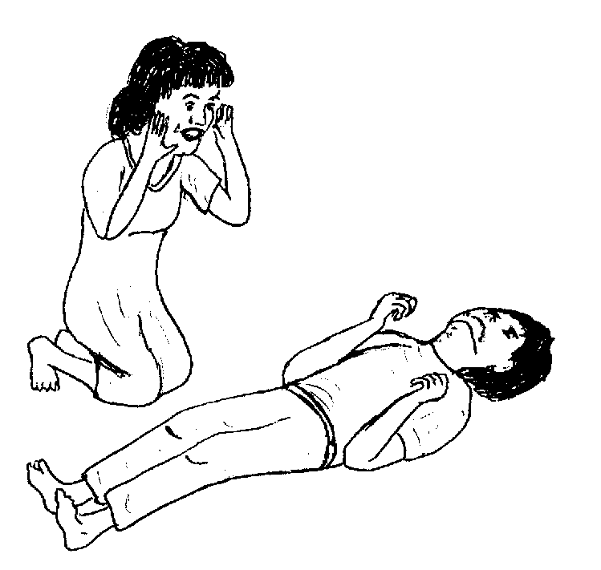
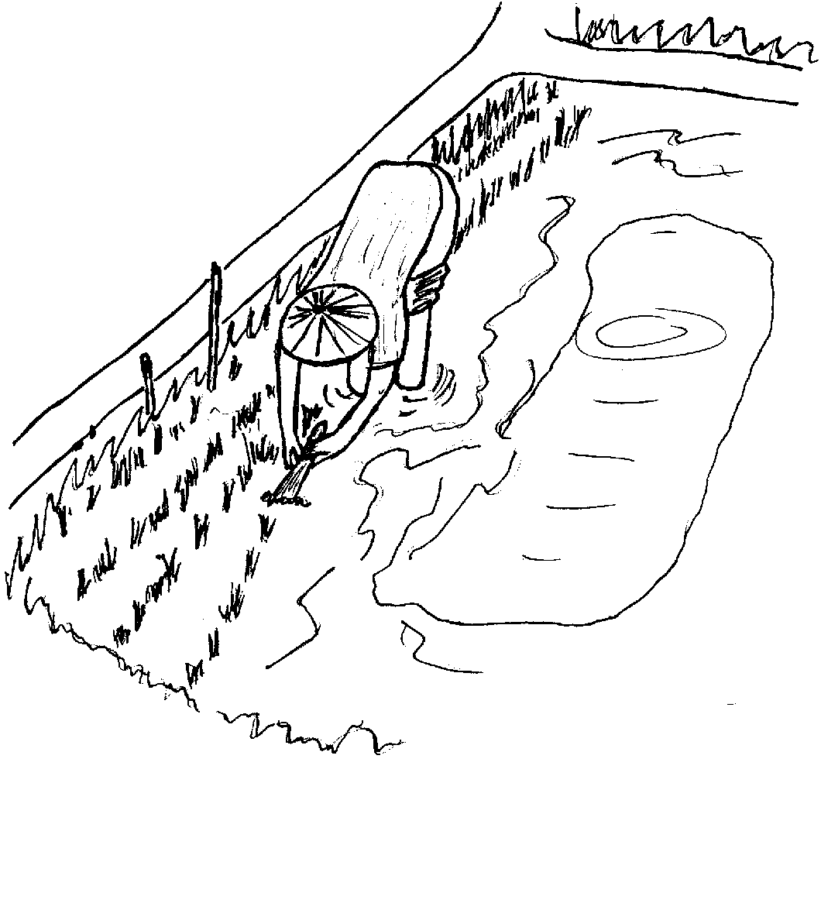
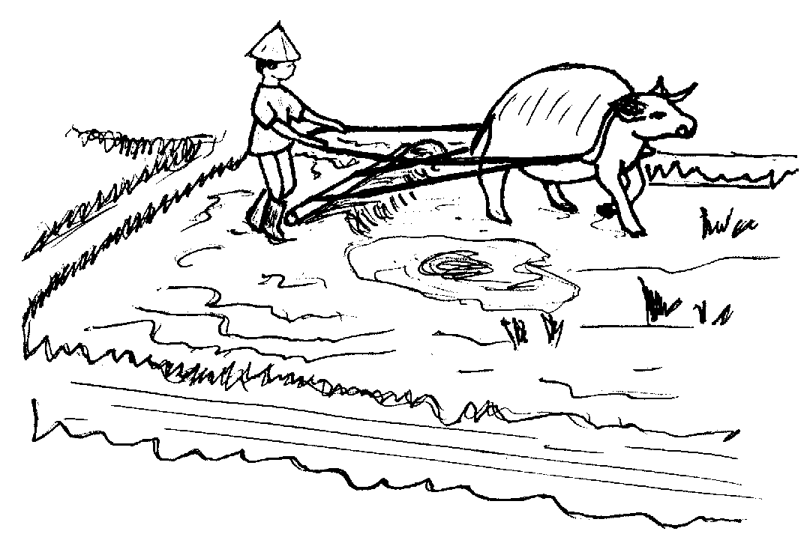

Matigsalug Manobo Healthbooks
Previous Healthbook Up to main Healthbooks page Next Healthbook
Vernacular Lexicon
A
B
BAP
BL
D
E
G
H
I
K
KI
L
LA
LIP
M
N
O
P
PA
R
S
SE
SIN
T
TE
TIN
U
V
W
Y
Z
Healthbooks
Sabekan aldew, nekeendiye ensi Wini duma te asawa rin te engki Inuk.
Migbebasakan si Wini diyet marani te bariyu ran.
Amanan mabasuk ne etew si Wini, piru te ware naluhey, hendue te warad keseg din wey hendue te amana rin egkabeley.
Layun din de egkalipung tenged te eggeramen din neg memasakit ka lawa rin wey ka ulu rin. Ka pegbebasak din ka amanag pakamasakit te peka rin.

Nekeendiye si Wini te engki Inuk su egpatabang su migbabuy rin gabii.
Ingkahiyan ni Inuk si Wini te, “Kema ke due sistu nu?”
Amanan nalaggew si Wini ne mig-inse, “Egpatey e naa? Su due timpu ne hendue te peggeram-geram ku ne buyag ad e.”
Ne migtabak si Inuk, “Kene kag patey ke egpabawi ka diyet huspital.”
Ne migkahi sikandin te, “Ka sistu, sabekan kalasi te uled neg ugpe diyet pungguk diyet weyig. Diye seini egkakuwa ne dalu te basakan wey te duman weyig labi e kayi te Bukidnon.

“Egsistuwen ka puun te malindit ne weyig ne migpangubpaan dan.”
Ne migpabulus si Inuk ka migkahi te, “Meupiya buwa degma ke langun niyu teg papitew te duktur su kema ke duen e diyet duma.
“Egpakamasakit wey egpakamahuye te lawa ka sistu. Ne emun keg gendiyad te utek ka sistu, sikan naa kag babuyen e ka etew.”
Ne migkahi man-e sikandin te, “Ke keneg kabawian, egkaayun neg patey sikandan ke nakaseled e ka uled diyet lawa ran.”
Ne mig-inse si Wini ne migkahi te, “Nakamemalehet ke naa ne sika iya ka dalu ku?”
Ne migtabak si Inuk te, “Kene amana. Keilangan ne igpapitew nu pad sika diyet duktur eyew egkatahaan nu. Su emun ke egsistuwen ka, egbehayan ka nikandan te tablitas eyew egpatey ka uled diyet lawa nu. Malemu re amana wey iyan man de egbayad ka gubirnu, ne ware egkabayaran nu.”
Ne mig-abey man-e sikandin migkahi te, “Kenen due-rue neg keulian ka dalu nu, ke kene egkapahanganaran de. Piru egpaliberen ke re te duktur diyet huspital eyew eg-angey te tablitas te tagse tatelun bulan.”
Ne mig-inse ka asawa ni Wini te, “Egmemenu ki naa eyew kene kid egsistuwen?”
Ne migkahi si Inuk te, “Ka atelug dan diyeg puun te tei wey ihi su keilangan ne kene kew eg-indes wey eg-ihi te minsan hendei ne marani te weyig.
“Kene kew egambul-ambul te malindit ne weyig, wey keg kaayun, bubutas kew kag bebasakan.”

Ne migkahi si Inuk te, “Emun keg pakaambul-ambul kew te malindit ne weyig, keilangan neg ayad-ayad kew egpanebbun kag pamanihus wey peyimmaraa niyu ka lawa niyu.”
Due-rue ne miggendiye ka alunggun te huspital su egpapitew te duktur wey egpabehey te bawi.
Ne migkahiyan sikandan te duktur te keilangan neg libed sikandan te tatelun bulan eyew egkuwa man-e te bawi.
Te migginguma ka pilan bulan, migmeupiye e ka me lawa ran su neulian e. Ne warad migmalised si Wini kag gimu su manekal rin man-e.
Egmenuwen taa teg pekeila ke egsistuwen ka etew?
Nekey-a kag gimuwen ke dueg sistuwen?
Nekey-a kag gimuwen ta su eyew kene kig sistuwen?
Amanag mahuye wey mahaan egkabeley, egmasakit se ulu, egmemasakit se me lawa, egkatabeleg, wey egbabuyen. (Lukib 75)
Keilangan ne iggendiye te huspital su egpatengtengan te duktur. Ne egbehayan dan te libri ne bawi ne igbawi te dalu. Ne keilangan degma neg papitew sikaniyu langun ne taltalaanak su ke kene, kema ke egpanderalu kew ke duen e kahew diyet kaniyu. (Lukib 78, 79)
(a) Keneg indes wey eg-ihi te minsan hendei ne marani te weyig. (Lukib 81)
(b) Keneg ambul-ambul te malindit ne weyig wey keilangan neg bubutas keg bebasakan. (Lukib 81)
(c) Ay-ayaran egsebbuni wey eglu-luan te malinis ne weyig ka laplap ne nakuan te malindit ne weyig. (Lukib 81)
This page last updated: 28-Dec-2019
Copyright © 2009-2010